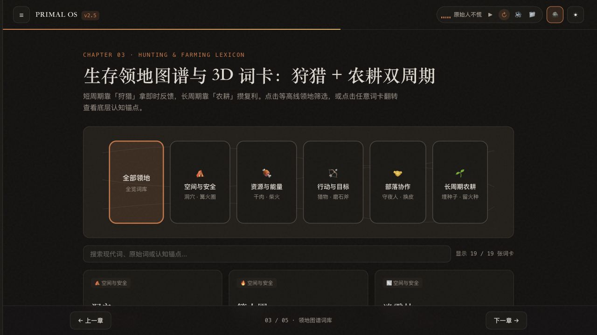

Website / interactive experience
Primal OS
A primal language for everyday thinking
Explore home, goals and long-term effort through the concrete metaphors of caves, hunting and farming.

What it is
An interactive experience combining language, music and simulated scenes. Five chapters recast modern concepts as observable facts, actions and time horizons. Move sliders, flip word cards, explore a campfire setting and compose your own survival tablet and cave-wall archive.
Features
- Five interactive chapters: cave view, word workshop, territory lexicon, campfire simulation and survival tablet
- Use sliders, bubbles and cards to compare abstract expressions with concrete anchors
- Search a hunting-and-farming lexicon and create custom cards locally
- A theme song accompanies Canvas camp scenes, weather and action interactions
- Save personal tablets and archive entries locally and export PNG images
Screenshots
